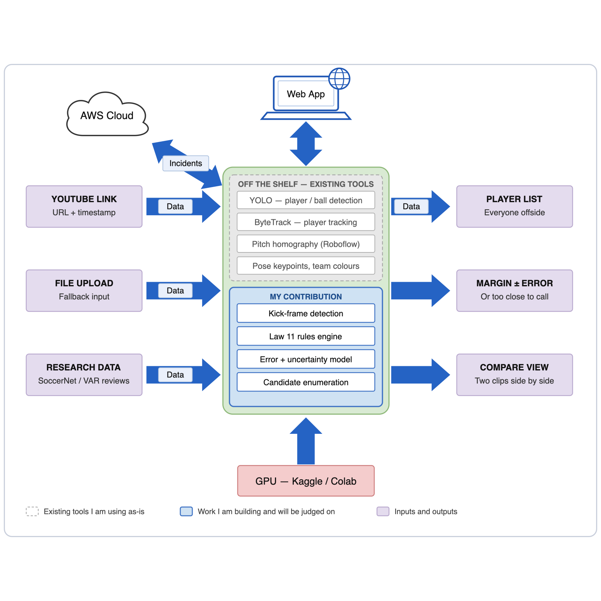

Project Engineering, Proposal — Year 4 Daragh Kearney Bachelor of Engineering (Honours) in Software and Electronic Engineering Atlantic Technological University 2026/2027
Set the title and author in Word via File > Info > Properties so the cover page and running headers update automatically.
I want to build a tool that takes a clip of an attacking move and tells a reviewer which offside situations are worth a second look. It does not make decisions. Its job is to make sure that every player who might matter to an offside call actually gets looked at.
Football player tracking is a crowded field and most of the perception work is already solved and freely downloadable. Pretending otherwise would be dishonest, so I want to be explicit about the line. Everything in the left column I will install and use as-is. Everything in the right column is mine, and is the work I expect to be judged on.
| Already available — I will use it as-is | What I am building |
|---|---|
| Player, ball and referee detection (YOLO with football-trained weights) | Finding the exact frame the ball is played, and measuring how much error that single choice introduces |
| Keeping player identities across frames (ByteTrack) | A Law 11 rules engine: second-last defender including the keeper, the level-with-the-ball exception, and an offside line set by the frontmost body part that can legally play the ball rather than the bottom of a bounding box |
| Assigning players to teams from kit colour | Listing every attacker in an offside position at the kick, instead of checking one nominated player |
Pitch-marking detection and the transform to a top-down view (Roboflow sports) | An error model — how far out those off-the-shelf positions actually are, and how that changes with camera angle, crowding and occlusion |
| Pose keypoints (YOLO-pose) | Turning that error into a stated margin with an error bar, and a "too close to call" verdict when the margin falls inside it |
Pretrained action-spotting baselines (SoccerNet); fetching a short window from a YouTube URL (yt-dlp) | The web application: paste a YouTube link (or upload a file), get the analysis back, compare two clips |
| Testing against published independent reviews of real decisions, rather than against labels produced by the same officials whose misses I am looking for |
Put simply: "where is every player on the pitch" is a solved problem I am treating as an input. "Which of them mattered, by how much, and how confident can we honestly be" is the project.
A web application. You paste a YouTube URL and a timestamp, or upload a file, and it returns:
A comparison view shows two analyses side by side. The most revealing comparison is the same incident with the kick frame shifted by one or two frames, because it shows how much the verdict depends on something the footage cannot fully settle. That is also the clearest way to demonstrate why this problem is harder than it looks.
The main way in is a YouTube link. You paste a URL and a rough timestamp, and the system pulls down only that few seconds of video rather than the whole match, which keeps it quick and cheap. File upload and the research dataset clips are the other two routes, and the dataset clips are what I measure accuracy against. Clips fetched from a link are analysed and then deleted — nothing is stored or republished, and it is only ever used for this project.
Finding the moment the ball is kicked. Offside is judged at that instant. TV footage runs at 25 frames a second, so frames are 40 ms apart and a sprinting player moves about 30 cm between them. Professional systems avoid this by putting a sensor in the ball; I have no such signal. This sets a hard limit on how precise I can be, which is why the system needs to say "too close to call" rather than guess.
Knowing how wrong the positions are. The off-the-shelf tools give me coordinates but no indication of how accurate they are, and they get worse as the camera angle flattens, players crowd together, or markings leave the shot. Measuring that properly and carrying it through to the final verdict is the part that does not exist yet.
Knowing whether I am right. Public football datasets only label offsides that were given. There is no dataset of offsides that were missed, which is exactly what I am looking for, so I have to assemble my own test set from published reviews of contested decisions.
I am not claiming the system will make better decisions than a VAR official — I could not prove that. What I can show is that it never skips a player, and that it is honest about its own error.
The idea came from the winning goal in the 2026/27 Manchester derby, Manchester United 0–1 Manchester City. Erling Haaland scored, was flagged offside, and VAR overturned the flag after finding he was onside by three centimetres. But his teammate Enzo Fernández had been clearly offside and had dived at the same cross, interfering with United's defenders and goalkeeper without touching the ball. Law 11 allows a player to be penalised for exactly that, so the goal should have been disallowed.
Howard Webb later explained on Match Officials Mic'd Up that the VAR checked only whether Fernández had touched the ball and never considered any other kind of involvement. He called it "tunnel vision". The Premier League's independent review panel agreed unanimously that the goal should not have stood.
What makes this worth building something around is that it was not a measurement problem. The technology measured Haaland to within three centimetres. The failure was that a second player was never looked at. Nobody asked the right question.
That also tells me what my tool can and cannot do. On the Haaland question, three centimetres is far beyond what TV footage can resolve, and the honest answer is "too close to call". On the Fernández question — a player clearly beyond the line diving at the ball — TV footage is more than good enough. The incident that caused all the trouble is the easy case for my system.
Commercial offside technology uses installed camera arrays and a sensor in the ball, so it is the accuracy benchmark but nothing I can compete with. Academic work on automated refereeing is mostly SoccerNet's VARS research, which targets fouls rather than offside.
The closest comparators are the open-source offside detectors that combine YOLO with a perspective transform. I went through several, and they share the same three gaps: they analyse one nominated player instead of all of them, they draw a confident line with no sense of how wrong it might be, and they are demonstrated on a handful of clips rather than measured against ground truth. Those three gaps are the right column of the table in §1.1.
Three sources, each for a different purpose:
Broadcast footage is copyrighted, so everything I train and measure against comes through SoccerNet's research agreement or from my own camera. Clips pulled from a user-supplied link are analysed and discarded rather than kept, and are not redistributed.

Figure 3-1: Architecture Diagram
The dashed grey panel is the existing tooling I am installing and using unchanged. The blue panel is the work I am building. The main input is a YouTube link plus a timestamp — the app pulls only those few seconds, the grey layer turns them into tracked players and pitch coordinates, and the blue layer decides which of those players mattered, by how much, and with what confidence. File upload is the fallback. Results go out as a list of everyone offside, a margin with an error bar, and a comparison view. AWS stores the incidents and serves them to the web application, and the heavy processing runs on free hosted GPUs rather than locally.
The one design decision worth highlighting is the split inside the blue panel. Detection and tracking are machine learning and are treated as such, with error figures attached. The offside rules are ordinary code that can be read and tested line by line. No neural network is asked to learn the offside rule.
The module is about 275 hours. Note that P0 is deliberately short: assembling the existing tools is a setup task, not the project. The bulk of the time goes into the right-hand column of §1.1.
| Phase | When | What I deliver | Hours |
|---|---|---|---|
| P0 Setup | Oct 2026 | Data access and ethics applications in; repository and CI running; existing YOLO and homography tools assembled and working on one clip | ~30 |
| P1 Measuring the baseline | Oct – Dec 2026 | How accurate the off-the-shelf positions actually are, measured against ground truth, and an error model describing how that varies | ~50 |
| P2 Rules and uncertainty | Nov 2026 – Jan 2027 | Kick-frame detection; Law 11 rules engine with tests; margins with error bars and "too close to call" | ~70 |
| P3 Involvement | Jan – Mar 2027 | Following each offside player after the kick and describing what they did | ~35 |
| P4 Application | Jan – Mar 2027 | Web application taking a YouTube link or an upload; comparison view; AWS backend; CI/CD; performance testing | ~60 |
| P5 Evaluation | Mar – Apr 2027 | Testing against all three data sources, observer study, dissertation, demo | ~30 |
Basic goals — I am confident of these, and together they make a complete project: a measured accuracy figure and error model for the off-the-shelf perception; automatic kick-frame detection; a tested Law 11 engine listing every offside-position attacker; margins reported with error bars and a "too close to call" verdict; and a web application that runs all of it on a YouTube link or an uploaded clip.
Stretch goals, in order: the comparison view; AWS deployment with live push and measured delay; distinguishing a passive offside player from one actively going for the ball; authentication and a security review; load testing; and the observer study.
Live TV integration and multi-camera analysis are out of scope — the first for licensing reasons, the second because the data does not exist. Both go in future work.
The biggest risk is SoccerNet data access being slow or refused, so I am applying in week one and have openly licensed datasets and my own footage as a fallback. The observer study needs ethics approval, which is also applied for early.
Tools. GitHub for the repository, issues and CI. GitHub Projects for the board. OneNote for a weekly logbook recording hours, decisions, experiments, supervisor meetings and where I used and rejected AI tool output. I am treating the logbook as a deliverable, since it is the only record of how I got to the result.
sports library for pitch keypoints and the top-down transform, OpenCV for video handling, yt-dlp and ffmpeg for pulling a short window out of a linked video.No custom electronics — this is a software project, so the engineering depth is in the architecture, testing and evaluation instead.